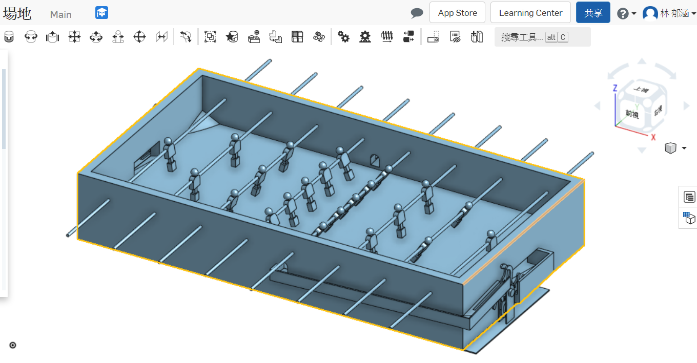

<!doctype html>
<html lang="en">
<head>
    <meta charset="utf-8">
<title>
2018 Fall 分組網際簡報
</title>
    <meta name="description" content="A framework for easily creating beautiful presentations using HTML">
    <meta name="author" content="Hakim El Hattab">
    
    <meta name="apple-mobile-web-app-capable" content="yes">
    <meta name="apple-mobile-web-app-status-bar-style" content="black-translucent">
    
    <meta name="viewport" content="width=device-width, initial-scale=1.0, maximum-scale=1.0, user-scalable=no">
    
    <link rel="stylesheet" href="css/reveal.css">
    <link rel="stylesheet" href="css/theme/black.css" id="theme">
    
    <!-- Theme used for syntax highlighting of code -->
    <link rel="stylesheet" href="lib/css/zenburn.css">

    <!-- Printing and PDF exports -->
    <script>
        var link = document.createElement( 'link' );
        link.rel = 'stylesheet';
        link.type = 'text/css';
        link.href = window.location.search.match( /print-pdf/gi ) ? 'css/print/pdf.css' : 'css/print/paper.css';
        document.getElementsByTagName( 'head' )[0].appendChild( link );
    </script>

    <!--[if lt IE 9]>
    <script src="lib/js/html5shiv.js"></script>
    <![endif]-->
</head>

<body>
<div class="reveal">
<!-- Any section element inside of this container is displayed as a slide -->
<div class="slides">
<section data-markdown>
    <script type="text/template">
## 2019Fall 協同產品設計 40623108網際簡報

### 虎科大機械設計工程系

<small>
Created by [40623108](https://github.com/mdecadp2018/site-40623108)
</small>

<small>
[小組網站](https://mdekmol.github.io/cd2019a-task1-2019cda_t1_g1/content/index.html)
</small>


    </script>
</section>


						
<section data-markdown>
    <script type="text/template">
# 投影片快捷鍵

* 利用箭頭上下前後換頁
* 按 f 鍵進入全螢幕模式 (full screen)
* 按 s 鍵可以顯示投影片筆記 (show)
* 按 o 鍵可以切換單張或全域檢視 (overview)
* 按 b 或 . 鍵可以切換螢幕黑屏 (black)
* 按 Esc 可以退出全螢幕或全域檢視 (Escape)

    </script>
</section>


						
<section data-markdown>
    <script type="text/template">
## WEEK11

* 這週先分配各組員的工作內容以及繪製初步ONSHAPE零件之尺寸。

* 負責項目: onshape場地變更、vrep模擬


    </script>
</section>

<section>
<section data-markdown>
    <script type="text/template">
<!-- 請注意, @others 不可以內縮 -->
## WEEK12

### onshape場地變更後圖檔

</img>

    </script>
</section>
<section data-markdown>
    <script type="text/template">
<!-- 請注意, @others 不可以內縮 -->
### onshape 場地變更操作影片

<iframe width="560" height="315" src="https://www.youtube.com/embed/k_9zQsTGkyU" frameborder="0" allow="accelerometer; autoplay; encrypted-media; gyroscope; picture-in-picture" allowfullscreen></iframe>
    </script>
</section>
</section>
<section data-markdown>
    <script type="text/template">
## WEEK13

### vrep模擬測試操作影片

<iframe width="560" height="314" src="https://www.youtube.com/embed/Tx87h_mkAyY" frameborder="0" allow="accelerometer; autoplay; encrypted-media; gyroscope; picture-in-picture" allowfullscreen></iframe>

    </script>
</section>
<section data-markdown>
    <script type="text/template">
## WEEK14

### vrep雙人對打基本設定操作影片

<iframe width="560" height="314" src="https://www.youtube.com/embed/rOSYUfn6ul0" frameborder="0" allow="accelerometer; autoplay; encrypted-media; gyroscope; picture-in-picture" allowfullscreen></iframe>


    </script>
</section>

<section data-markdown>
    <script type="text/template">
## WEEK15

### 手足球完整圖檔vrep設定及模擬操作影片

<iframe width="560" height="314" src="https://www.youtube.com/embed/9jx62Klbqkw" frameborder="0" allow="accelerometer; autoplay; encrypted-media; gyroscope; picture-in-picture" allowfullscreen></iframe>

    </script>
</section>
<section data-markdown>
    <script type="text/template">
## WEEK16

* 這週更新個人倉儲部分以及期末影片。

<small>
[40623108個人倉儲](https://github.com/mdecadp2018/site-40623108)
</small>

    </script>
</section>
<section data-markdown>
    <script type="text/template">
### 心得

* 從onshape到vrep，花了很多時間學，對繪圖跟模擬都有比之前更加瞭解跟熟悉了，不過還是希望能夠更深入地去理解它。


    </script>
</section>

<section data-markdown>
    <script type="text/template">
### 自評

* 學員出席(20%) 20分
* Github 倉儲管理(20%) 10分
* Onshape 協同操作(20%) 15分
* V-rep 模擬(20%) 10分
* 程式開發(20%) 5分
* 總分:60分

    </script>
</section>

</div>

</div>

<script src="lib/js/head.min.js"></script>
<script src="js/reveal.js"></script>
<script>
        // More info https://github.com/hakimel/reveal.js#configuration
        Reveal.initialize({
            controls: true,
            progress: true,
            history: true,
            center: true,

            transition: 'slide', // none/fade/slide/convex/concave/zoom

            // More info https://github.com/hakimel/reveal.js#dependencies
            dependencies: [
                { src: 'lib/js/classList.js', condition: function() { return !document.body.classList; } },
                { src: 'plugin/markdown/marked.js', condition: function() { return !!document.querySelector( '[data-markdown]' ); } },
                { src: 'plugin/markdown/markdown.js', condition: function() { return !!document.querySelector( '[data-markdown]' ); } },
                { src: 'plugin/highlight/highlight.js', async: true, callback: function() { hljs.initHighlightingOnLoad(); } },
                { src: 'plugin/zoom-js/zoom.js', async: true },
                { src: 'plugin/notes/notes.js', async: true },
                { src: 'plugin/math/math.js', async: true }
            ]
        });
</script>
</body>

</html>

